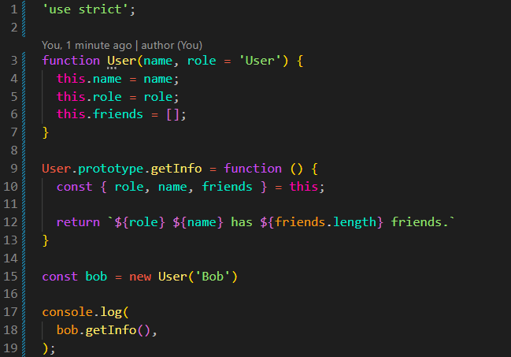
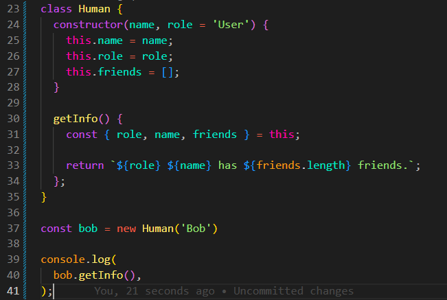
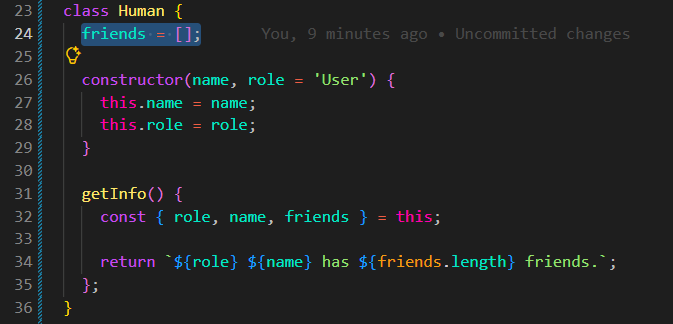
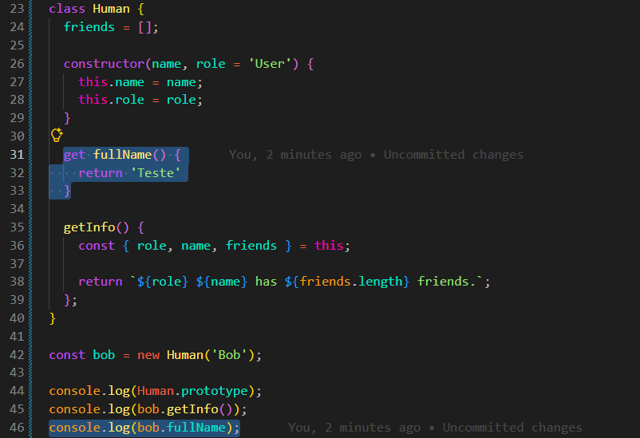

Class Syntax
Intro
Aqui iremos continuar aprendendo sobre funcoes construtoras e prototype. Porem, agora faremos isso de uma forma mais moderna, utilizando de uma sintaxe mais simples e compreensivel de classes.
Aqui iremos continuar aprendendo sobre funcoes construtoras e prototype. Porem, agora faremos isso de uma forma mais moderna, utilizando de uma sintaxe mais simples e compreensivel de classes.
JS:

Para entendermos melhor, teremos o seguinte código de exemplo:


Na nova sintaxe, usamos a palavra class para criar uma classe. Dentro das chaves {}, colocamos as propriedades e os métodos que farão parte dessa classe.
Primeiro podemos adicionar um método chamado constructor. constructor é um nome reservado dentro de uma classe e é executado automaticamente quando criamos um novo objeto usando new.
Dentro do constructor, colocamos as propriedades que precisam ser criadas para cada objeto. Também podemos receber parâmetros para definir valores diferentes para cada objeto.
Os métodos também podem ser criados diretamente dentro da classe, mas eles ficam disponíveis através do prototype. Por isso, não precisamos escrevê-los dentro do constructor.
Uma das diferenças é que uma class não pode ser executada diretamente como uma função. Por exemplo, não podemos fazer Human(). Para criar um objeto a partir de uma classe, precisamos usar new.
Por exemplo:
class Human {
constructor(name) {
this.name = name;
}
}
const david = new Human('David');
Nesse exemplo, new Human('David') cria um novo objeto. O constructor recebe 'David' e cria a propriedade name nesse objeto.
Também podemos criar propriedades diretamente dentro da classe, fora do constructor. Porém, essas propriedades continuam pertencendo a cada objeto. Elas não são adicionadas ao prototype.

Essa forma é útil quando a propriedade possui um valor inicial que não depende dos parâmetros recebidos pelo constructor.
Também podemos criar propriedades cujo valor depende de um cálculo ou de outra propriedade.

É importante lembrar que propriedades criadas diretamente na classe são criadas em cada objeto. Já os métodos criados diretamente no corpo da classe ficam disponíveis no prototype.
Portanto, a class é uma forma mais moderna e organizada de criar objetos usando constructors. Ela também possui recursos próprios, como get, set e uma forma mais simples de trabalhar com herança.
function Human() {} → podemos usar uma função construtora para criar objetos.
class Human { constructor() {} } → usamos uma classe, e o constructor é a parte responsável por configurar o objeto que está sendo criado.